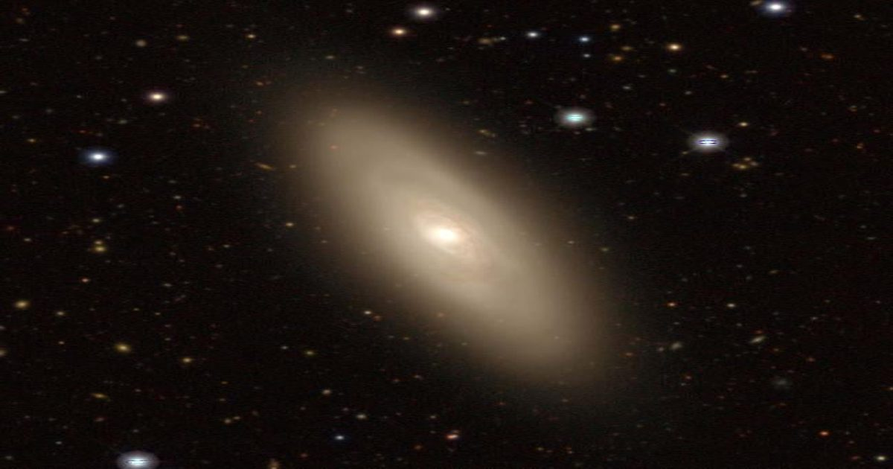

Сверхмассивные черные дыры могут усилить звездообразование
Черные дыры в сердцах галактик получают признание и/или вину за многое в своих хозяевах.
Например, они берут на себя вину за поглощение звездообразующего материала, эффективно «гася» звездообразование в некоторых областях галактик.
С другой стороны, теперь выясняется, что некоторые из них могут также часто участвовать в рождении звезд.